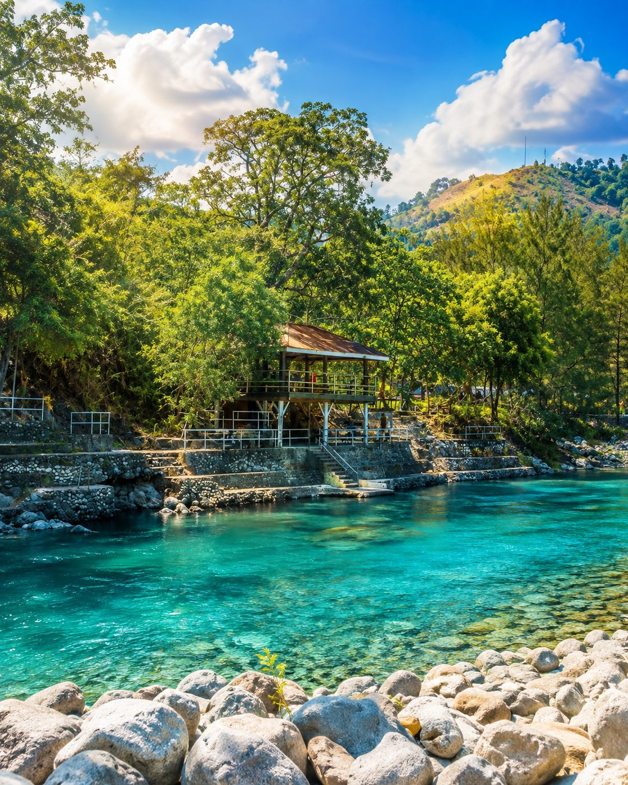
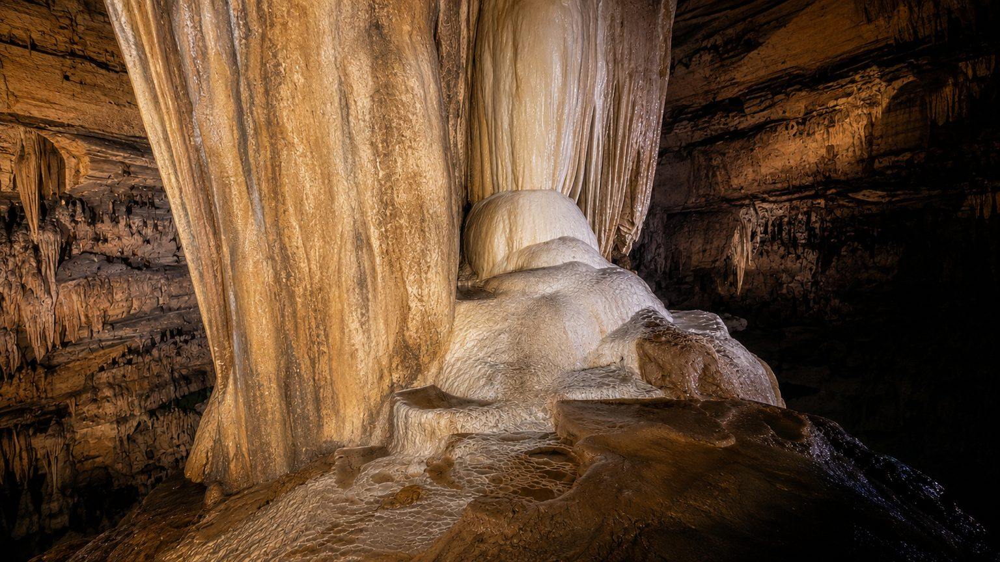
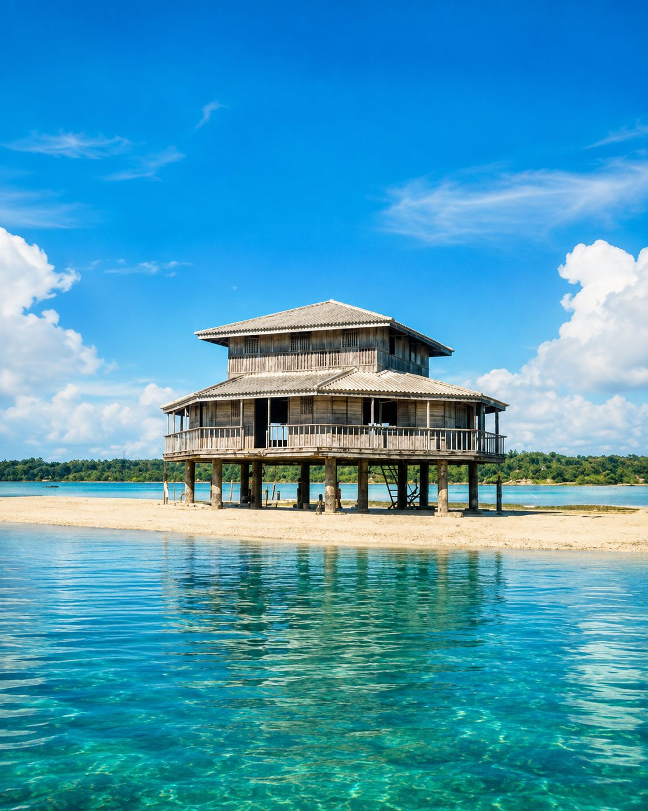

About Masinloc · Places
The places we
grew up in.
Eight places in Masinloc, Zambales, each photographed where it actually is and written down with the barangay it belongs to. Most of us grew up in them; nobody had put them in one place before.
Start at Hamat River
Hamat River
Sta. Rita, Masinloc
Where cool waters flow and green forests gleam, Hamat River feels like nature's quiet dream.
A river crossed by a suspension bridge in Sta. Rita, and part of Masinloc's inland freshwater landscape.
Things to do
- Relax by the river
- Enjoy the scenery
- Take nature photos
{kind=link}

San Salvador Island
Masinloc, Zambales
Where blue waters flow and island shores gleam, San Salvador feels like nature's tropical dream.
An island on the Masinloc coast, and part of the town's marine and coastal environment.
Things to do
- Walk the beach
- Explore the shoreline
- Take seaside photos
{kind=link}

Coto Kidz Pool
Taltal, Masinloc
Cool waters waiting beneath the green, Coto Kidz Pool is a refreshing Masinloc scene.
A river pool in Taltal used for swimming, in Masinloc's inland uplands.
Things to do
- Swim in clear water
- Enjoy a picnic
- Unwind by the river
{kind=link}

San Andres Church
Masinloc, Zambales
Through generations its walls still stay, San Andres welcomes those who come to pray.
A stone church in the Masinloc town centre, and the town's best known heritage landmark.
How this building actually reached us
Things to do
- Visit the church
- Admire heritage details
- Take cultural photos
{kind=link}

Bunga Cave
Sta. Rita, Masinloc
Go beneath the surface, see what time can make, a hidden Masinloc adventure waits inside Bunga Cave.
A cave with flowstone formations in Sta. Rita, in Masinloc's inland uplands.
Things to do
- Explore the cave
- Admire rock formations
- Take cave photos
{kind=link}

Bacala Sandbar and Guesthouse
Masinloc, Zambales
Where calm blue waters meet the sand, Bacala gives you paradise close at hand.
A sandbar with a stilt guesthouse on the Masinloc coast, and a place to stay by the water.
Things to do
- Walk the sandbar
- Enjoy the sea breeze
- Stay by the shore
{kind=link}
Sitio Buri
Inhobol, Masinloc
Green hills rising beneath the open sky, Sitio Buri is where the breeze wanders by.
Open grass hills in Inhobol, and part of Masinloc's inland upland country.
Things to do
- Enjoy the hill views
- Take a nature walk
- Capture scenic photos
{kind=link}

Masinloc Baywalk
Masinloc, Zambales
Catch the breeze and watch the whole sky glow, at Masinloc Baywalk, sunset puts on the show.
A public seafront walk in the Masinloc town centre, and the site of the town's MASINLOC sign.
Diwan Coffee, at the Pasalubong Center here
Things to do
- Stroll by the bay
- Watch the sunset
- Take waterfront photos
{kind=link}